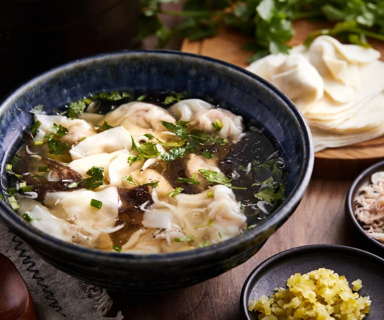
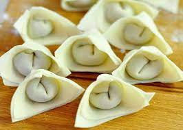
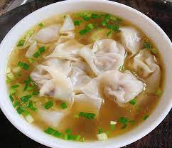
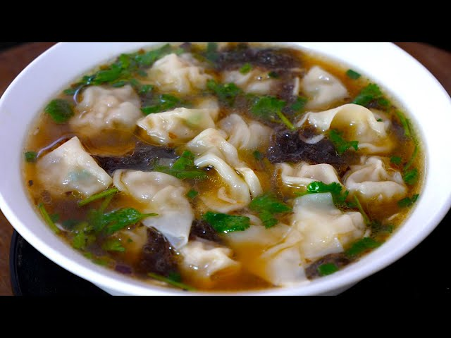
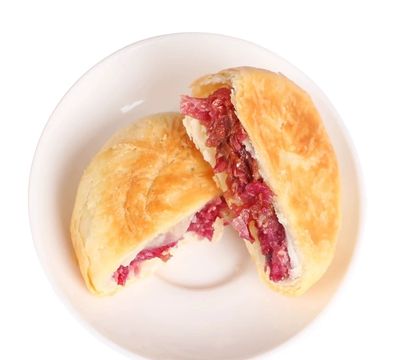
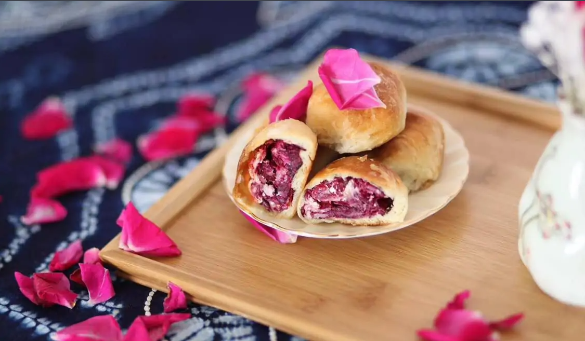
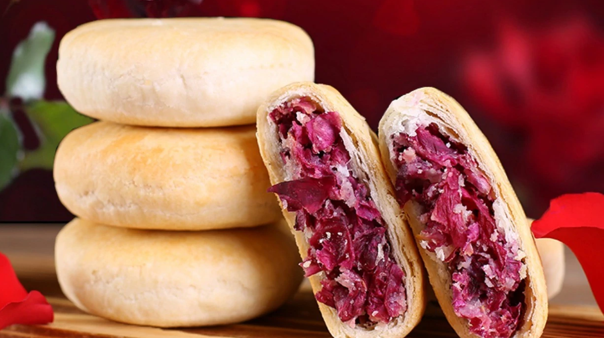

Wonton
Origin: Shanghai,China Source: Family Recipe Category: Main dishes Wonton is a common main dish in southern China.People like to take it as breakfast. It has a delicious flavor and is enjoyed by Chinese of all ages.
Recipe Ingredients
- Pork
- Seaweed
- Eggs
- Salt
- Green onion
- Wonton wrappers
Recipe Steps
- Lean pork washed, finely chopped; seaweed washed, torn; egg whisked into an egg wash, the minced meat, salt, minced green onion plus egg wash, stirred into the meat filling.
- Divided into 20 equal parts of the meat filling, were wrapped in wonton wrappers, into 20 wonton blanks.
- Put the pot on the fire, add the right amount of broth to boil. Add the wontons, cook over medium heat until boiling, then turn down the heat, sprinkle with seaweed, cook briefly for l-2 minutes, add salt.
Additional Food images
  Double Chocolate Cookies
Origin: Michigan Source: Family Recipe Category: Dessert
My daughter learned to make these cookies at a baking camp at Zingermanns and has tweaked the recipe to fit the taste buds of her siblings. They are extremely sugary so the salt helps to balance it. Note, these cookies are best eaten very quickly.
Recipe Ingredients
- Unsalted butter
- Granulated Sugar
- Packed light or dark brown sugar
- Large egg
- Pure vanilla extract
- Semi-sweet chocolate chunks (melted)
- All-purpose flour
- Natural unsweetened cocoa powder
- Baking soda
- Salt
- Semi-sweet chocolate chunks
Recipe Steps
- In a mixing bowl cream together the butter, granulated sugar, and brown sugar
- Add the egg and vanilla extract and beat well
- Add the melted chocolate
- In a separate bowl combine the flour, baking soda, cocoa powder and salt
- Combine the wet and dry ingredients
- Add the unmelted chocolate chunks.
- Form 15 cookies and place on a baking sheet.
- Cook for 12 to 13 minutes at 350 degrees.
Additional Food images


Rose Pie
Origin: Yunnan,China Source: Family Recipe Category: Dessert Rose pie is a specialty dessert of China's Yunnan Province. It is made from rose petals soaked in sugar, and is very popular because it tastes of the fragrance of roses and the sweetness of sugar.
Recipe Ingredients
- flour
- lard
- sugar
- warm water
- cooked flour
- cooked sesame seeds
- sugar roses
- melon seeds
- peanut kernels
- walnuts
Recipe Steps
- 500 grams of flour, 80 grams of lard, 20 grams of sugar, 200 grams of warm water into a water-oil dough standby.
- 250 grams of sugar, 250 grams of cooked flour, 30 grams of cooked sesame seeds, 50 grams of sugar roses, 5 grams of melon seeds, 5 grams of peanut kernels, 5 grams of walnuts, stirring well, processed into a filling standby.
- Adopt the method of large package of pastry to make pastry, pick into 30 grams of the size of the agent.
- Wrap about 30g of filling into each dosage, close the mouth, and lift it into a round biscuit with the palm of your hand with the mouth facing downward.
- Allow the biscuits to rest for about 10 minutes, then stamp with red food coloring and bake in the oven until the surface is golden red.
Additional Food images
 